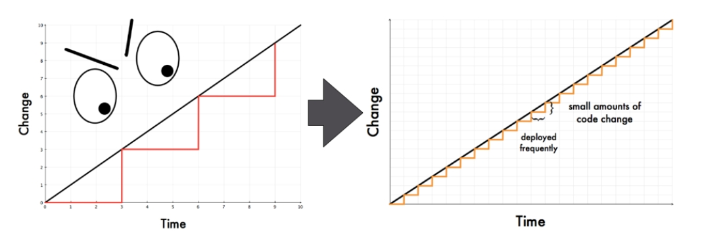
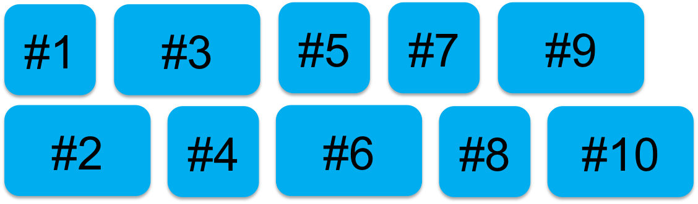
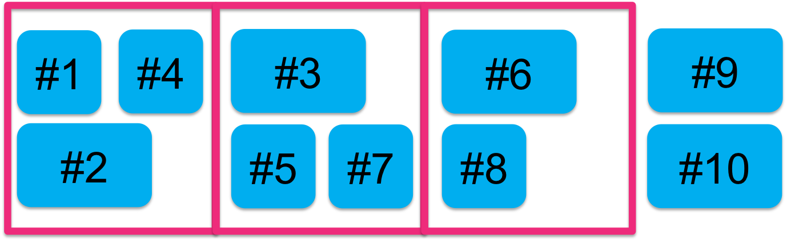
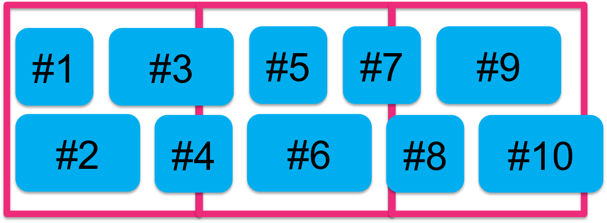
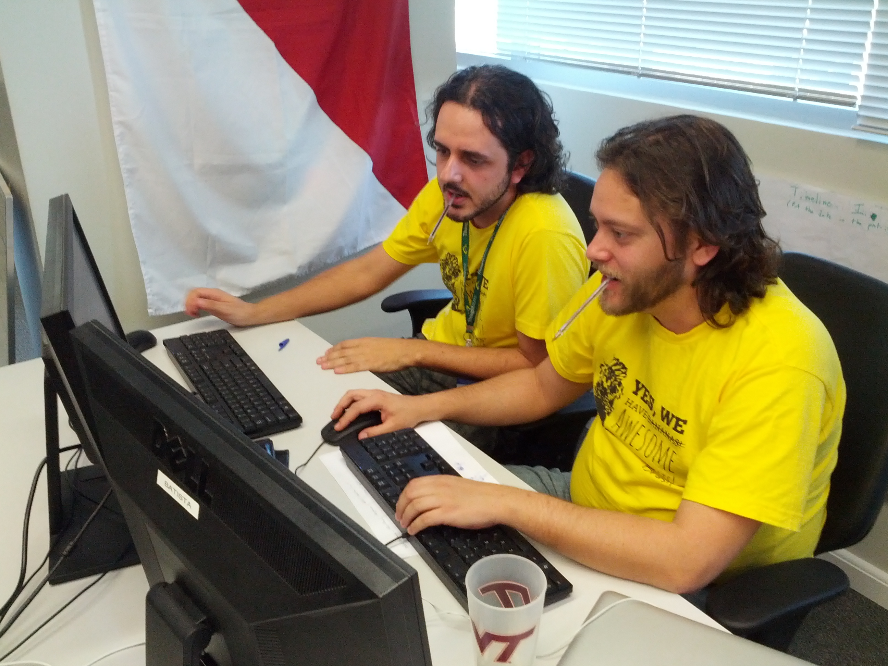
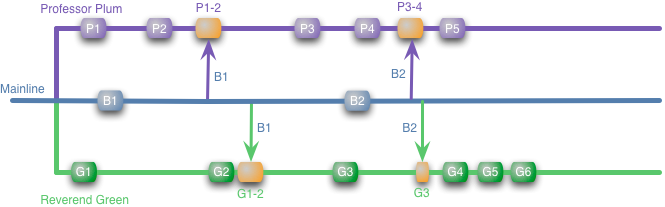

Adotando Continuous Delivery
Por Marcelo Oliveira e Rafael Magrin
Marcelo dos Santos de Oliveira
marcelo.oliveira@thoughtworks.com
@blackbnu
Rafael Magrin
rmagrin@thoughtworks.com
@rafaelmagrin
ThoughtWorks
Tóti o quê?
Continuous Delivery

O que é?
Ter certeza de que o software está pronto para ser entregue durante todo o seu ciclo de vida - qualquer build pode ser entregue ao cliente com o apertar de um botão usando processos automatizados em questão de segundos ou minutos
Por que adotar?
- Reduzir custo, tempo e risco entregando mudanças incrementais ao usuário
- Entregar a funcionalidade certa através do rápido feedback sobre hipóteses
Reduzindo tamanho do release
Princípios
- Crie processo repetíveis e confiáveis para release do software
- Automatize tudo que for possível (use pessoas para tarefas de alto valor)
- Mantenha tudo armazenado em controle de versão
- Pronto significa entregue
- Todo mundo é responsável pela entrega
Práticas
- Compile os artefatos apenas uma vez
- Testes automatizados em todos os níveis
- Faça o deploy da mesma maneira em todos ambientes
- 'Teste de fumaça' a cada deploy
- Mantenha os ambientes similares
- Se algo falhar, pare tudo
Continuous Delivery != Continuous Deployment
Como adotar?
Processo
waterfall -> iteração -> flow
Funcionalidades 
Iteração 'clássica' 
Iteração como checkpoint 
Colaboração constante (dev, ba, qa, ops)
Confiança no Código
Pair Programming
Rápido feedback

Automação do build
What do we do it: compilação, criação de pacote e execução de testes
How do we do it: rake pc
Intergração Contínua
Pequenos e frequêntes commits
Ferramentas:
Build radiator
DIY Build Radiator
Homebrew build status traffic light
Testes funcionais
- Construir a funcionalidade certa através da perspectiva do usuário
- Colaboração entre cliente/dev/qa
- Testes de regressão
Testes de unidade
- Construir a funcionalidade da maneira correta
- Feedback técnico rápido e preciso
Automação de deployment
How do we do it: ruby deploy.rb THE_APP 1234 PROD
Continuous Delivery of this blog
Diferentes streams, mesmo codebase
Branching Strategies!
Feature branch
Merge hell

mostrar exemplo hp com esforço pra merges
Feature Branching is a poor man's modular architecture, instead of building systems with the ability to easy swap in and out features at runtime/deploytime they couple themselves to the source control providing this mechanism through manual merging.
Dan Bodart
Continuous Integration

Links úteis
Feature toggle + Branch por abstração
Toggles - Esconder funcionalidades novas
Branch por abstração - Mudanças de grande escala de maneira incremental
Toggle code snipet
function oi ( selector ) {
if( toggle ) {
}
};